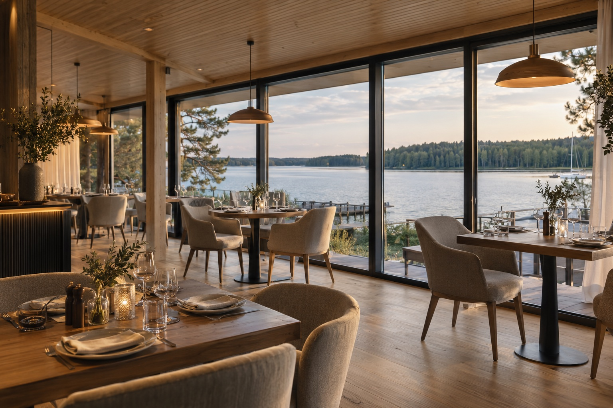

Можайское водохранилище
Отдых
у большой воды.
Лесной берег, открытый горизонт
и время для себя.
На Можайском
водохранилище.
Можайское водохранилище — место для отдыха у воды в Московской области. В центре концепции — берег, лес и прогулки на свежем воздухе.
Об отелеХаусботы с видом на природу.
Все хаусботы


Концепт: четыре категории для примера. Площади, комплектация и фотографии предварительные.

Ресторан.
Неспешные завтраки у воды и ужины с видом на закат. Панорамные окна, тёплый свет и натуральное дерево создают камерную атмосферу для встреч с близкими. В тёплые дни можно выбрать столик на открытой террасе.
Забронировать отдых
Каждый день — новая история.
Выберите свой ритм семейного отдыха.